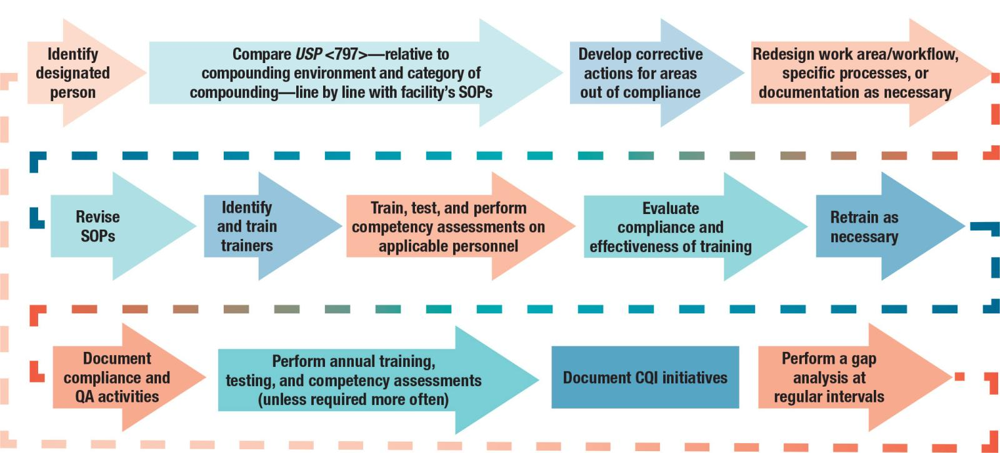
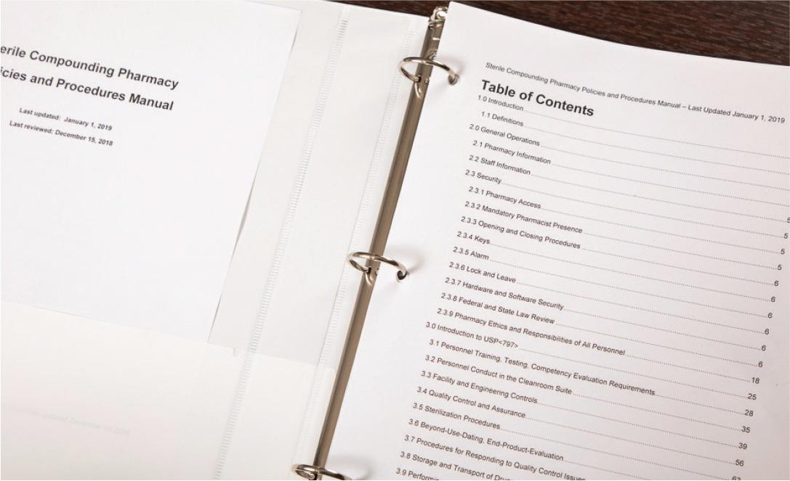
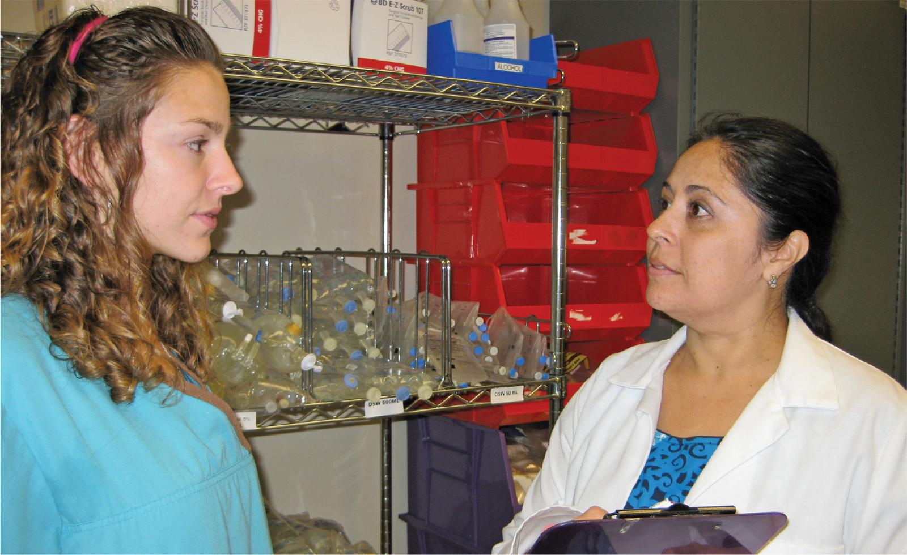

PART 1: CONCEPTS
3.5 Quality Assurance in Sterile Compounding
Pharmacists and pharmacy technicians engaged in sterile compounding are expected to follow national practice standards in addition to applicable laws and regulations for the preparation of CSPs. Sterile compounding personnel can reliably turn to USP <797> for minimum practice standards applicable to sterile compounding and aseptic technique. Much of the content of USP <797> is directed toward ensuring that the environment in which CSPs are prepared as well as the people involved in their preparation are capable of consistently producing CSPs of appropriate identity, strength, purity, and quality. These standards are the framework for a quality assurance (QA) program, or a formal system that includes policies, procedures, and other activities to ensure that established standards for maintaining the quality of CSPs are consistently met.
USP <797> requires each pharmacy to identify a designated person(s) who is “assigned to be responsible and accountable for the performance and operation of the facility and personnel as related to the preparation of CSPs.” All pharmacy personnel bear responsibility for being informed about and complying with the facility quality assurance program and quality control requirements. The designated person is likely to have a leadership role in conducting the gap analysis, revising SOPs, conducting quality assurance activities, carrying out competency assessment testing, and providing oversight for activities taking place in the sterile compounding environment.
Quality Assurance Program
A sterile compounding facility’s QA program must define requirements and essential documentation for personnel education, registration, licensure, or certification and for initial and ongoing training and competency assessment as related to job responsibilities. Additionally, a QA program needs to include requirements and essential documentation for the facility, equipment, environmental monitoring, hand hygiene and garbing, cleaning and disinfection, and equipment use and maintenance. Finally, a QA program must address each aspect of the sterile compounding process from the receipt of medication components to the dispensing of a CSP, including the protocol if specifications in a facility’s SOPs are not met or a customer concern is received.
Quality Control Measures
A facility’s QA program must also describe definitive quality control (QC) measures. These measures include release tests and environmental monitoring activities. The specific requirements are dependent upon the compounding category and compounding environment. Refer to USP <797> for specific requirements, which should be reflected in the facility’s SOPs.
Release Tests
Sterile compounding personnel must perform release tests prior to the delivery of a CSP for patient administration. These tests include an inspection of each CSP to determine whether the physical appearance of the preparation is as expected. In light of that, a CSP must not contain visible particulates, discoloration, or defects to the container-closure system such as leaks, cracks, or improper seals. Any signs of these defects make the CSP unsuitable for patient administration. Other release tests include the confirmation that the CSP and its label match the medication order and, possibly, sterility testing on a representative sample from a CSP batch to ensure that specifications have been met.
Environmental Monitoring Activities
Sterile compounding personnel must conduct and document the environmental monitoring activities described in USP <797>. These activities include monitoring the temperature, humidity, and pressure differential in the cleanroom suite and the temperatures of drug storage areas such as refrigerators and freezers. Other environmental monitoring activities include conducting viable air and surface sampling in the cleanroom suite and in each PEC to check for unacceptable levels of microbial growth.
Air Sampling
Sterile compounding personnel must conduct air sampling of PECs and the cleanroom suite to ensure that these areas meet standards for air quality. In addition, personnel must perform dynamic airflow smoke pattern tests in each PEC to ensure uninterrupted, unidirectional airflow from the high-efficiency particulate air (HEPA) filter. The results of this smoke pattern test must also meet the specifications outlined in USP <797>.
If air sampling readings fall outside of the expected range, sterile compounding personnel must follow procedures outlined in their facility’s SOPs to remedy the situation. They must also ensure that equipment used for sterile compounding must be appropriate for use in a sterile compounding environment and must be used, calibrated, and maintained according to the manufacturer’s recommendations.
Surface Sampling
Sterile compounding personnel must clean and disinfect all surfaces in the sterile compounding environment using low-lint cleaning supplies and appropriate solutions. These procedures must be performed at intervals prescribed in USP <797> and by trained and appropriately garbed personnel according to a facility’s SOPs. Personnel must document these cleaning and disinfecting procedures. They must also conduct surface sampling at the frequencies stated in USP <797>, upon the introduction of new or recertified equipment, and upon evidence of quality assurance anomaly or suspected failure.
Quality Assurance Training and Assessments for Sterile Compounding Personnel
Before initially preparing CSPs for patient administration, sterile compounding personnel must complete training, written tests, and competency assessments in sterile compounding and aseptic technique. This training, testing, and demonstration of competencies must be conducted in the following areas:
- hand hygiene and garbing
- cleaning and disinfection
- calculations, measuring, and mixing
- aseptic technique
- achieving and/or maintaining sterility
- use, cleaning, and maintenance of equipment
- documentation of the compounding process
- principles of unidirectional airflow within the ISO Class 5 PEC
- proper use of PECs
- movement of materials and personnel within the compounding area.
A designated individual or assigned trainer oversees these competency assessments and documents these areas initially and at least every 12 months.
Gloved Fingertip and Thumb Sampling
Sterile compounding personnel must be observed by a designated individual or trainer initially and at least every six months while performing hand hygiene and garbing procedures. In order to demonstrate initial competency with hand hygiene and garbing procedures, personnel must successfully complete an initial garbing competency evaluation followed by gloved fingertip and thumb sampling on each hand a minimum of three separate times with no microbial growth before being allowed to independently prepare CSPs. This gloved fingertip and thumb sampling assesses a compounder’s ability to maintain an acceptable environment for sterile compounding.
For the initial process, the sterile compounder dons sterile gloves and then rolls each finger and thumb across an agar plate that contains a growth media. This sampling reveals whether the sterile compounder can don sterile gloves without contaminating them. The subsequent process is performed post garbing and after media-fill testing (see following discussion). The post media-fill testing shows if gloves and supplies are wiped adequately during the compounding process. The sampling results must indicate no more than three colony-forming units (CFUs), which is calculated by adding together the CFUs from each hand.
Media-Fill Testing
Sterile compounding personnel must also perform media-fill testing initially and at least every six months to assess aseptic technique. This testing must simulate the most difficult and challenging conditions encountered by a compounder during preparation of a CSP. Media-fill testing involves the use of soybean-casein digest media as a substitute for the usual components used in sterile compounding. Commercially available media-fill test kits may be used but may need to be customized to simulate facility procedures.
Following media-fill testing, sterile compounding personnel must undergo a gloved fingertip and thumb sampling from each hand while their hands are still in the PEC but before disinfecting their gloves. Immediately after the gloved fingertip and thumb sampling is complete, surface sampling of the work area in the PEC should be conducted.
In the event of a failure during any aspect of training, written testing, or competency assessments such as gloved fingertip and thumb sampling and media-fill testing, the designated individual or trainer must document the results of the evaluation and any corrective actions. These corrective actions most often involve retraining and retesting. Personnel must pass all aspects of the training and competency assessment program before being allowed to prepare CSPs. Failure response instructions and corresponding corrective actions should be detailed in facility SOPs.
Continuous Quality Improvement
Continuous Quality Improvement (CQI) involves using data from the QA program and QC measures as well as information from customer concerns or complaints to resolve problems and make system changes. This data and feedback improve the overall confidence level that CSPs will be of appropriate identity, strength, purity, and quality.
CQI initiatives may be related to any aspect of the sterile compounding process and may involve improvements with the facility, equipment, personnel, or compounding procedures. Sterile compounding personnel should identify any issues, evaluate their root causes, and implement corrective actions. These actions should subsequently be evaluated to determine if they were effective. Any CQI changes must be documented in a facility’s SOPs and personnel must undergo training to align with these changes.
Gap Analysis
Robust QA programs and QC measures are essential to reduce the risk of contamination to CSPs. USP <797> requires a designated individual or individuals to oversee compliance with these standards. This compliance extends to the sterile compounding facility and its equipment and personnel, as well as each aspect of the sterile compounding process. Performing a gap analysis is a useful way to determine a facility’s level of compliance with USP <797>. A gap analysis is a method of comparing a facility’s current practices, policies, and procedures against desired standards (see Figure 3.3). Performing a gap analysis on a regular basis (e.g., annually) is an excellent means to uncover weak areas and to ensure ongoing compliance with USP <797> standards. You will learn more about USP <797> requirements for quality assurance and quality control in Chapter 4.

Standard Operating Procedures Manual
Every pharmacy must have facility-specific Standard Operating Procedures (SOPs) that provides guidance related to the operation and security of the pharmacy, requirements of personnel, and rules of the facility. SOPs must also give instructions related to legal and ethical requirements, USP <797>, and other applicable compounding standards and should refer personnel directly to the appropriate section of the law or chapter of the standard itself. Finally, SOPs should give specific and detailed guidance related to the facility’s procedures for the preparation of CSPs, including CSPs that require unusual preparation procedures or special handling, storage, or transport procedures. CSPs that require specialized preparation or handling include high-alert medications, parenteral nutrition solutions, chemotherapy or other hazardous CSPs, pediatric CSPs, or CSPs that contain controlled substances.

Observed Violations in a Sterile Compounding Environment
Pharmacists and pharmacy technicians have a personal responsibility to comply with legal and ethical requirements, USP <797> compounding standards, facility SOPs, QA programs, and QC measures during the preparation of CSPs. They also have a shared responsibility to ensure that every individual who enters the sterile compounding environment does the same.

In light of this shared responsibility, sterile compounding pharmacists and pharmacy technicians may find themselves in situations where they have observed a violation of USP <797> standards or recognize a “near miss,” which is an issue that was discovered before it reached a patient. They may also have observed a failure to follow legal or ethical requirements or established policies and procedures in a facility. That violation, “near miss,” or legal or ethical breach may involve a colleague, a supervisor, a vendor, or a visitor. In such situations, personnel are legally and ethically bound to take action as patient lives may be at risk.
If a USP <797> violation, a “near miss,” or a legal or ethical breach occurs, sterile compounding personnel should approach the individual and, in a respectful and professional manner, ask questions to clarify what happened. In that conversation, they should refer to the specific rule or standard that was violated and avoid engaging in conflict or disparagement with the involved individual. Alternatively, personnel should maintain their focus on what they observed, what law or standard may have been violated, and any necessary corrective actions or next steps. It may be helpful for both parties to review the applicable information together to confirm whether what happened was a true violation.
If it is clear that a standard violation or legal or ethical breach occurred, sterile compounding personnel must do what is right for the patient recipient of the CSP and take the following actions:
- They must intervene immediately, or as soon as it is safe to do so. If a CSP has been prepared in error, it is essential that the preparation is not sent out of the pharmacy.
- If the CSP has been sent out of the pharmacy, they must work with the pharmacy supervisor on duty to immediately notify the nursing unit to warn them not to administer the preparation to a patient.
- After leaving the cleanroom suite, they must record their recollection of the incident. Their documentation should address the 5Ws and 1H: Who was involved? What was the incident? Where did the incident take place? When did the incident occur? Why did the incident occur? How could the incident have been prevented? This information may be important should the incident end in a serious consequence. Personnel should keep this information in a secure place as it may be confidential in nature.
- They must report the incident according to their facility’s SOPs. It is important that this incident be reviewed by pharmacy and facility leadership so that changes can be made to prevent a similar incident. In addition, personnel must determine if it is appropriate to report this incident to an outside source such as MedWatch or the state BOP. (For more information on medication error reporting, see Chapter 2.)
- They must refrain from gossip or blame and be supportive of the colleague, vendor, or visitor involved in the incident as this event is a stressful situation for everyone.
If the supervisor of the pharmacy fails to take appropriate action for the reported incident, as occurred in the New England Compounding Center incident with fungal contamination of steroid medications, personnel may need to report the incident to an individual outside of the pharmacy setting: a hospital nurse manager, a risk management team member, the hospital director, or even the state BOP or similar agency.
The best way that sterile compounding personnel can prepare themselves for this type of situation is to have a solid understanding of the legal and ethical requirements governing pharmacy practice. In addition, they must be well-versed in USP <797> standards and familiar with their facility’s SOPs. Any incident that may occur should be viewed as an opportunity to improve processes and procedures in a pharmacy. Pharmacy personnel must continue to place the utmost importance on providing safe and effective CSPs to patients.
Chapter 3 Checkpoint
Instructions:
-
Take a moment to reflect on what you have learned in the previous sections and answer the following questions.